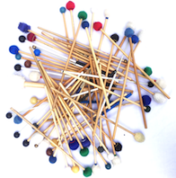
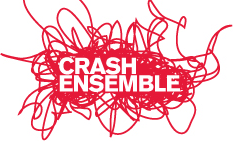
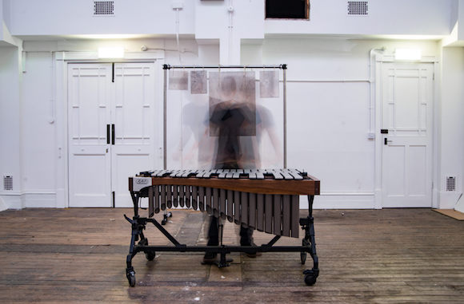

|
Latest Bangers and Crash Percussion  Concert with Caitriona Frost as part of Music for Wexford series May 30th: St Peters College Crash Ensemble  Collaboration with RÓIS as part of Musictown June 17th: NCH

Declan English
|

Mark Stedman
Petcu Colan’s Rising Star performance was memorable no less for the breadth of technique than for the comparable range of emotion, expression and mood. Andrew Johnstone, Irish Times, - NCH Rising Star Recital 2015 With overlapping rhythms, this drum solo becomes more and more frenetic as it progresses and has Crash's ambidextrous Alex Petcu no less frenzied. Pat O'Kelly, Irish Independent, - Crash Ensemble, New Music Dublin festival, 2014 Alex Petcu sitting amid a barrage of percussion added brilliant crash, bang, wallop to Thomas Adés’ rich and vivid score.
Cathy Desmond, Irish
Examiner |